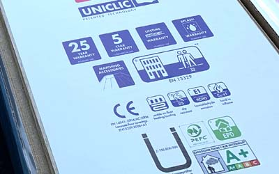
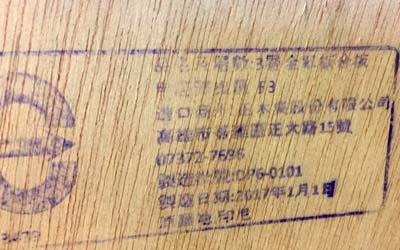
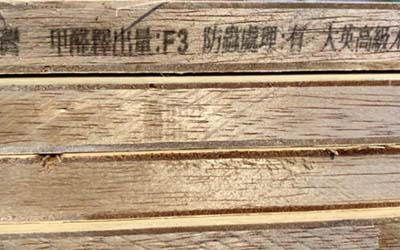
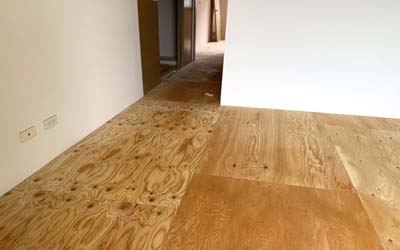
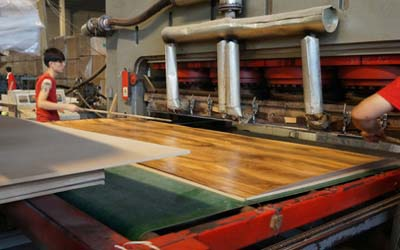
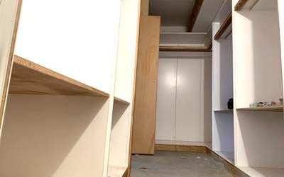
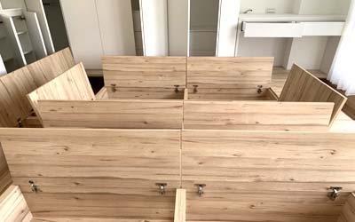

世屋除甲醛

seiyaled@gmail.com 02-28725575

| 目前的建材,驗證量測單位都只對樣品負責,不對實際貨品負責，另外使用歐洲進口板材,實際上其標準,外銷及內銷測試法也不同,所得結果也大不相同,目前有下列四種測試法 |
| ■穿孔萃取法:测试成本低,(歐盟使用.) |
| ■乾燥器法:對溫度控制要求嚴格,(美國,日本使用) |
| ■氣體分析法:歐盟使用 |
| ■氣候箱體法:日本.美國.歐盟使用 |
| 因為测试方法不一样，因此其所得之單位,是無法相對應,比方說(干燥器法)是甲醛溶解在水中，再测量水中的甲醛含量其單位是mg/L(水含量單位),氣候候箱體法式是得到mg/m³立方米是(混合氣体單位) |
| 注意事項:並非有氣味就一定是甲醛超標 |

| ■以一般國內住宅,使用舊版標準.最優等建材,F1或E0木地板板材平均釋放量0.05-.011ppm,以10坪空間而言無天花板.及其它櫃體,,在夏日只要關上門窗.大約4-5小時候就會達到近乎超標,在冬季則是8-12小時就會超標如果家裡還有天花其他木作.等等.夏日只需1-3小時就會超標。 |
| ■美國国（CARB）在2012年就已對生產板材的工廠，家具廠、進口商.貿易商 .零售商流程上来看，工厂、家具厂、进口商、贸易商、零售商每個交易環節，CARB都明确要求其记录，包括時間.批次.編號....等等追根溯源体系，到交付消费者手里的每一件家具木材，都有查詢。 |
| 自2019年後,在美國境內製造或進口的在規定範圍內的複合木板和成品必須經由加州空氣資源委員會（CARB）審核和美國環保署（EPA）認可的第三方驗證機構（TPC）證明符合有毒物質控制法（TSCA）第六條或加州空氣資源委員會（CARB）空氣中有毒物控制措施（ATCM）,以新法(第二階段)取代舊法(第一階段)標準規定。 |

| ■1L的溶液中有某物質一毫克，某物質含量即為1ppm,1ppm即是一百萬分之一, |
| ■甲醛氣體分子量為30.0260。M為氣體分子量，T為溫度，P為壓力。m為氣體品質（單位mg) |
| ■mg/m3 = M x 22.4 x ppm x (273/(273+T))×P/101325 。。 |
| ■其測試之溫度為20度C, 一大氣壓(ATM)下， |
| ■計算方式1mg/m³=30.026*22.4*(273/(273+20))*101325/101325，ppm=0.8ppm |
| ■因此1mg/m³等於0.8ppm,可用兩種方式表達均為相同濃度 |
| ■以下為美國2019年后新標準甲醛含量標準 |
|
■單.複合板材 :舊標準0.08 新標準0.05 ppm ■顆粒板材 : (舊)0.18ppm(新)0.08 ppm ■低密纖維板:(舊)0.21ppm 新標準0.13 ppm |
| ■歐盟E1新標0.124 mg/m³,等於0.0992ppm約在0.1ppm |

■甲醛測試背景不同結果不同,上述有多種測試法,但是用相同測試方法,所得出結果也不相同,原因在於各種木材特性不同,以及所訂定之實驗背景值不同所造成,實際用於裝潢中期釋放率.濃度都會不同, |
| ■板材之標準與空氣品質標準是不同,這必須了解;因此不能使用測試板材標準做為室內空氣之標準,以室內空氣品質標準需在0.08ppm以內,但最優板材為何會在0.3ppm?這必須探討甲醛毒性,是和吸收時間.吸收量有關 |
■您可能不知道,現代辦公室室內空氣品質標準會有90%不合格,但其不合格時間在一周內只會有數分鐘到數小時間,但這其實並不是實際不合格,這和使用狀況有關 您可能也不知道.已經10-20年房屋至少也有百分之80也會超標;但那都是量測背景問題,而非真超標 |

| ■人體在多少時間吸收多少劑量是會危害身體,以最常見的LCt50，包含了濃度(C)和暴露時間(t)的描述，(分鐘-毫克／立方米)做為描述，比方說某種有害氣體,在10 mg/m3濃度下暴露100分鐘/每年,和0.1 mg/m3下暴露10000分鐘/每年,所吸收甲醛量是相等,但造成傷害是前者高於後者.( 在不考慮年齡、性別、耐受度等個別體質差異的情況下)。 |
| ■人一分鐘呼吸量 6-9 L. 甲醛半數致死濃度為815 ppm (1,000 mg/m³)/ 30分危害生命健康為20 ppm (24.5 mg/m³) |
| ■由 |

| ■國外為何可以有低甲醛建材,台灣為何不行,其實不見然,只因為歐美國家溫度濕度低,甲醛釋放速率慢,普遍來說這問題小,但是只要是高溫高濕下也會有這問題,這就必須討論到在制定這標準時之背景,例如在法國巴黎是沒人裝冷氣.就可想得知其夏天室內還是很涼爽.但是這兩年地球溫度破紀錄.巴黎居民才開始裝冷氣 |
| ■因此甲醛會不會超標和溫度有絕對關係,甲醛標準是由歐美國家訂定,任何標準都有其背景值,但在熱帶地區台灣地區也是使用相同標準，是有些不合理 |
| ■甲醛有沒有超標應該與現實背景和使用狀況才是有真正關係 |

| ■其實綠建材並沒想像中那絕對安全,還是要和使用方法有關 |
| 我們在20年經驗中,有許多綠建材標章建材,使用在裝潢上,造成室內超標比例也相當高,在於綠建材它是符合國內ＣＮＳ製造標準,但是在使用在室內空間上不代表它會合格,因為那兩種標準是截然不同. |
| ■ |
| ■網站修改中 2022.10.23 |
| ■ |
| ■ |

| ■ |
| ■ |
| ■ |
seiyaled@gmail.com 02-28725575